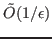
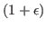
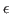
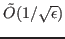

In machine learning and data analysis the singular value decomposition is typically used for principal component analysis, low-rank approximation, and other problems where just a few top singular directions are needed. In this regime, block iterative methods like randomized Simultaneous Iteration have become standard and are often used as defaults in popular machine learning libraries.
There is good reason for this - such methods are simple to implement, fast in practice, and come with strong convergence guarantees for data analysis tasks. Importantly, unlike traditional bounds, these guarantees do not depend on singular values gaps, which are often helplessly small in high dimensional data problems.
An analysis by Rokhlin, Szlam, and Tygert of Simultaneous Iteration has been particularly influential. They demonstrate that, when implemented with randomly chosen start vectors, the algorithm requires just

iterations to return a set of approximate singular vectors that yield a low-rank approximation within
of optimal for spectral norm error. When requirements on
are relatively loose and singular value gaps are small, as is typical in modern data analysis applications, this iteration bound is much tighter than classical results.In this work we extend this gap-independent analysis to a simple randomized block Krylov method, which is closely related to the classic Block Lanczos algorithm. We show that after just

iterations, our method recovers a set of approximate singular vectors that are within of the optimal for low-rank approximation and principal component analysis. To complement this theoretical guarantee, we demonstrate experimentally that our method significantly outperforms randomized Simultaneous Iteration in many scenarios.Despite their long history, our analysis is the first of a Krylov subspace method that gives accuracy bounds that do not depend on singular value gaps. It relies on framing iterative algorithms as de-noising procedures for coarse randomized sketching methods for approximate singular value decomposition.
Using this framework, we can argue that the approximate singular vectors returned by our block Krylov algorithm are nearly optimal for low-rank approximation and principal component analysis even if, due to small spectral gaps, they have not converged to the true top singular vectors of the matrix.
Our Krylov method results rely critically on a new analysis of the standard Rayleigh-Ritz method - we show that the procedure still works effectively when convergence to the true top subspace has not occurred. This new analysis also leads to improved gap-independent bounds for Simultaneous Iteration.
Finally, beyond gap-independent results, we prove extremely simple
convergence bounds that do depend on singular value gaps. We show
how to take advantage of these bounds by using a block size slightly
larger than the target rank  , theoretically justifying a
heuristic implemented in several data analysis libraries.
, theoretically justifying a
heuristic implemented in several data analysis libraries.